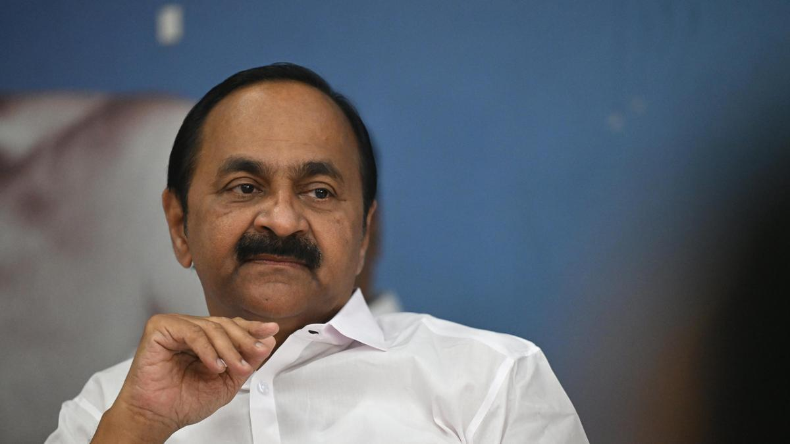

Congress Leader KC Venugopal Welcomes VD Satheesan's Appointment as Keralam Chief Minister
Veteran Congress leader KC Venugopal has broken his silence about the party choosing VD Satheesan as the new Chief Minister of Keralam. In an interaction with the media in Delhi, he said that he "welcomed" the decision. "The final decision has come, and the Congress high command decided VD Satheesan as the Chief Ministerial candidate for Keralam Government. I am welcoming that decision wholeheartedly," he said.

Satheesan's appointment marks the end of an 11-day deadlock following the election results on May 4. Venugopal was considered the top pick of the Congress high command during this period, while Satheesan was the preferred choice of allies and the party's workers. The Congress-led UDF alliance secured 102 seats in the assembly, handing the LDF a decisive defeat.
Born in 1964, Satheesan began his political career by joining the Kerala Students Union and later the Kerala Youth Congress. He is a lawyer by profession. He won the 2026 Assembly Election from Paravur — a constituency he has been associated with for 25 years — marking his sixth term as an MLA. He previously served as Leader of Opposition in the last assembly, emerging as a vocal critic of the then LDF government. With Satheesan chosen as CM, the Keralam Congress Committee will now meet the Governor and stake claim to form the government.